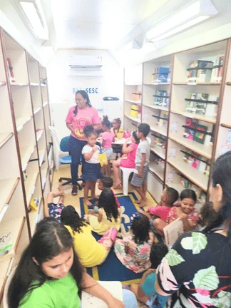
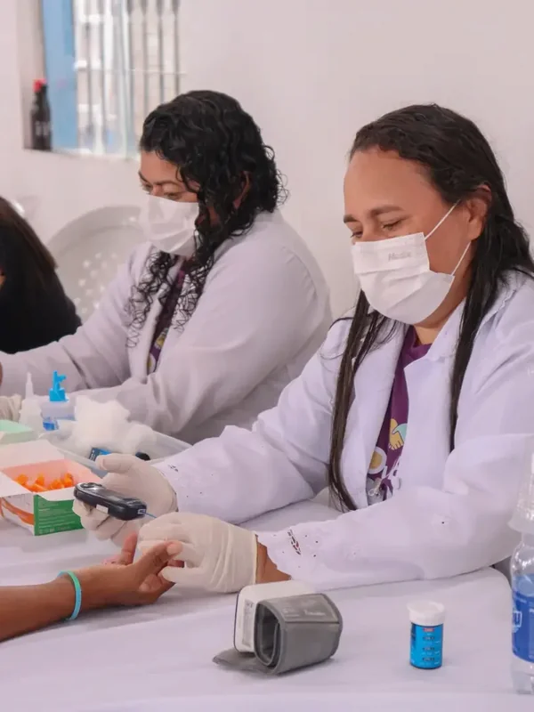
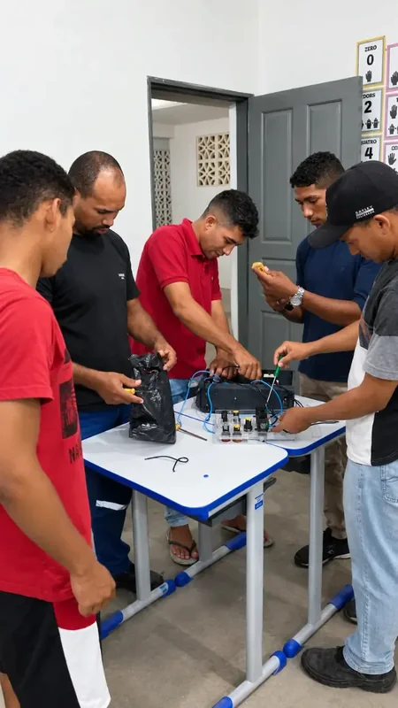
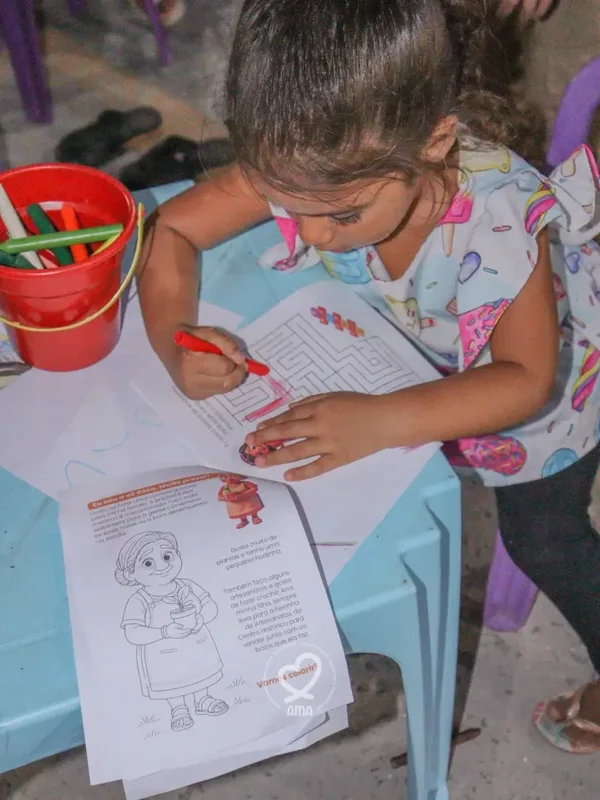

Transformação pelo Cuidado e Capacitação.
O Instituto AMA acolhe, mentora e assiste comunidades para construir um futuro com mais dignidade e autonomia.




Uma jornada de solidariedade e ética.
O Instituto AMA nasceu da vontade de criar pontes entre quem quer ajudar e quem precisa de suporte para florescer. Atuamos com transparência e governança para garantir que cada investimento social se transforme em impacto real.
Acolher
Escuta ativa e suporte psicológico para quem mais precisa.
Mentoria
Capacitação profissional e empoderamento social.
Assistência
Apoio emergencial, segurança alimentar e resgate da cidadania.
Projetos que transformam realidades.

Projeto Acolher
Apoio psicossocial e escuta qualificada para indivíduos em situação de vulnerabilidade.
Saiba mais →
Empreendedoras
Capacitação e mentoria para mulheres chefes de família buscarem independência.
Saiba mais →Próximas Atividades & Oficinas
Acompanhe a programação dos nossos projetos na Vila Mauro Fecury I. Venha participar das oficinas, treinamentos e encontros comunitários.
Roda de Apoio Emocional
Encontro de acolhimento psicossocial e escuta qualificada para famílias e mães da comunidade.
Projeto Criança AMA Brincar
Encontro de acolhimento psicossocial e escuta qualificada para famílias e mães da comunidade.
Culto de Ações de Graça / Inauguração Nova Sede AMA
Encontro de acolhimento psicossocial e escuta qualificada para famílias e mães da comunidade.
Assembleia Geral Associados do AMA
Encontro de acolhimento psicossocial e escuta qualificada para famílias e mães da comunidade.
Governança Séria e Compromisso Social
Fundado em 2021 pelo Pastor José Chagas na Vila Mauro Fecury I, o Instituto AMA atua de forma juridicamente autônoma com personalidade jurídica própria, sede estruturada e prestação pública de contas.
Buscamos constantemente parceiros institucionais e investidores sociais para a construção da nossa Nova Sede Própria, ampliando nosso impacto e a capacidade de atendimento comunitário em São Luís.
Diretoria Geral
Gestão 2025-2029
Silas Barros
Vice-PresidenteTransparência em cada passo que damos.
Acreditamos que a confiança é a base de qualquer parceria sólida. Por isso, disponibilizamos nossos relatórios de impacto, certidões e dados de governança para consulta pública.
Portal da TransparênciaRegularidade jurídica e cadastral ativa perante os órgãos competentes.
Prestação de contas e auditorias independentes.
Acordos firmados com poder público e privado.
Segurança e privacidade dos dados de nossos assistidos.
Como você pode ajudar?
Sua contribuição permite que o Instituto AMA continue acolhendo, mentorando e assistindo centenas de famílias todos os meses.
PIX Solidário
A maneira mais rápida e direta de contribuir com nossos projetos.